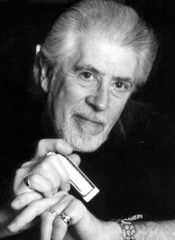

(англ. музыкальный жаргон - «раскручивающий блюз»)
Исполнилось (29 ноября 2003) 70 лет культовой фигуре мирового блюза и рока Джону Мейоллу (John Mayall).
Случается ли: вы расслабленно сидите в тишине и изумляетесь, куда занесла вас карьера?
Нет. Ведь это так чудесно! Понимаете, просто всё продолжается. И каждый раз, когда я выхожу на сцену, я получаю огромное удовольствие.
(Из интервью Интернет-журналу Fuze)

Блюз - музыка особая. Он не нужен потребителю масспопа. Блюз не затерялся среди множества течений и стилей, предназначенных для продвинутого слушателя, у него в этой компании почётное место. Компакт-диски короля блюзовых буги Джона Ли Хукера или отца британского блюза Джона Мейолла уютно соседствуют на полках меломанов со вкусом с альбомами кельтской музыки и этноэлектроникой, «Карминой Бураной» и Филиппом Глассом.:А ведь был период, когда мировая эстрада «болела» блюзом. Парадокс моды на стоны и бренчание гитар негров Миссисипи и гулкий грохот черных ансамблей Чикаго, или блюзового бума 60-х в том, что эта мода охватила вначале Британию. Лишь затем блюзовая лихорадка перекинулась на историческую родину жанра - в США. Героями причудливого феномена являются несколько тогда совсем юных английских музыкантов, прежде всего из группы «Роллинг Стоунз», и Джон Мейолл, герой этих записок.
«Роллинги» стали звездами, поскольку были чертовски талантливы. Правда, не только поэтому. Прагматичные юноши открыли свою «золотую жилу», руководствуясь лишь вкусом. Но и с нюхом на конъюнктуру у них все обстояло неплохо. Мик и Кейт обожали блюз, а также рок-н-ролл Чака Бэрри, кстати, оказавшийся лишь продолжением первого. Они брали песни никому неведомых в Туманном Альбионе американских исполнителей ритм-энд-блюза, добавляли к ним эмоционального перца и исполняли - чуть более нервно и гораздо громче. Формулу использовали «Animals», «Yardbirds» и еще целая куча предприимчивых англичан. Вслед за «Битлз» в 1964-65 они ринулись в Америку, свели ее с ума, заработав там миллионы - заработав на песнях самих же американцев! Явление получило название «британское вторжение». Почему Америка не нашла «пророков в своем отечестве», почему она игнорировала музыку собственных чернокожих - отдельный разговор.
Возвращаясь к британскому блюзу. «Локомотивы эстрады», тараны, пробивающие стены между массовой аудиторией и испонителями - шлягеры. Использовав блюз в качестве такого тарана, более того, положив блюз в основу своего стиля, «Роллинги» перестали его петь уже к 1966 году.
Джон Мейолл, также находившийся, так сказать, на острие блюзового бума, выбрал более сложный путь. По-своему не менее мощный талант, чем упомянутые, он остался верен своему выбору, продолжая петь и сочинять блюз 40 лет спустя. Мало кому удавалось сказать оригинальное слово в искусстве, несмотря на всевозможные наслоения, остающемся фольклором, культурой американских негров. Вероятно, за пределами Америки - только Мейоллу. Хотя почти 35 лет он живет в Калифорнии, в историю музыки он вошел как творец своего собственного, читай «британского», блюза.
Джон Мейолл - отец шести детей и дед шести внуков и внучек. Суровый «дорожный боец» не чает в них души, с радостью откликается на их «па» или «деда». Если же произносится самое банальное и вместе с тем самое точное определение его роли в музыке - «отец британского блюза» - Джон мрачнеет. Ему не по душе этот заскорузлый штамп. Ему вообще не нравятся намеки на возраст, а в таком контексте почему-то особенно. И тем не менее:
К тому моменту, когда «Роллинг Стоунз» взяли первые аккорды, Мейолл уже не первый год занимался блюзом. Правда, переехать в Лондон и сделать исполнение блюза профессией Джон решился лишь в возрасте 30 лет. Джон Мейолл (John Mayall) родился в поселке Макклесфилд (графство Чешир) недалеко от Манчестера 29 ноября 1933 года. Соприкосновение с музыкой, главным образом джазовой, произошло сразу же, как только малыш обрёл способность её слышать: отец Джона был меломаном, коллекционировал пластинки и в выходные играл на гитаре в любительском оркестре. Азам обращения с гитарой, фортепиано и гармоникой Джон самостоятельно выучился подростком, затем продолжил с учителями в художественной школе. Мотивация тому нашлась серьёзная. В отцовской коллекции обнаружились граммофонные диски «королей» фортепианного буги-вуги Алберта Эммонса, Мида «Люкс» Льюиса и Питера Джонсона, а также исполнителей американского чёрного фолка Джоша Вайта, «Большого» Билла Брунзи, Мадди Уотерса. Их музыка казалась чудом! Она будоражила, притягивала, приглашала присоединиться. Собственно говоря, то была судьба. «С тех пор я хотел исполнять блюз», - просто сказал в одном из интервью Джон.
Занятный эпизод в биографии Мейолла - его жизнь на деревьях. Примерно в 15 лет строптивый отрок заявил родителям, что, как вполне взрослый человек, съезжает из дома в собственное жилище, которое он соорудил в ветвях дерева - наполовину конура, наполовину воронье гнездо. Джон прожил среди птиц, чеширских ветров и листьев дуба, проведя наверх электричество и нечто вроде водопровода, несколько лет. История эта обросла легендами, и блюзмен старается не останавливаться на ней в интервью, хотя она вовсе не только курьёз и свидетельствует об оригинальности и независимости его личности уже в достаточно раннем возрасте.
После окончания художественного школы, в начале 50-х Мейолл подписал контракт на службу в армии, попал в «горячую точку» - в контингент, принимавший участие в войне в Корее. Три года:
С театра военных действий Джон привез купленную во время короткого отпуска в Японии электрогитару и решимость продолжить художественное образование. В Манчестере он поступил в художественный колледж, в котором увлеченно проучился до 1959 года. В этот период Джон Мейолл создает свои первые музыкальные коллективы и завязывает дружбу с музыкантами, впоследствии влившимися в его знаменитую группу «The Bluesbreakers» - «Раскручивающий блюз».
В музыкальной жизни столицы Великобритании тем временем начались судьбоносные процессы смены у публики музыкальных вкусов. Начиналось нечто новое, новые идеи витали в воздухе. Слабые импульсы этих новшеств посылала Америка, но расшифровать их пока не было дано никому - не пришло еще время. Первой и очень робкой ласточкой этого явления можно считать деятельность эксцентричного и почти никем тогда не понятого джентльмена по имени Алексис Корнер. Корнер фанатично поклонялся джазу, однако в какой-то момент его укусила муха блюза. В результате гитарист и певец популярного оркестра Криса Барбера начал исполнять эту музыку - так, как он ее понимал - в виде интермедии концертов Барбера. Затем последовало образование легендарного коллектива «Блюзовая Корпорация», первых блюзовых клубов в Лондоне, медленное, но верное образование (пусть пока чрезвычайно узкого) круга поклонников черного фольклора. С иронией, впрочем, лишенной сарказма, Мик Джаггер - один из участников «Блюзовой Корпорации» в начале 60-х - вспоминал: «Блюз Корнера был забавный, как бы ненастоящий. Представьте себе чопорного английского аристократа, педантично артикулирующего слова, который старательно выпевает блюзы нищих негров с берегов Миссисипи». Алексис Корнер был убежден, что блюз по аранжировкам, по звучанию должен быть отраслью джаза.
В любом случае, Корнер первым в Англии попробовал исполнять эту музыку, в том числе во время клубных выступлений в Манчестере в 1959 году. Там он и познакомился с молодым дизайнером по фамилии Мейолл. Впоследствии они активно общались, так как оба были страстными коллекционерами пластинок и музыкантами, и Корнер настойчиво советовал своему новому другу «забросить все к чертовой матери и ехать в Лондон». Идея эта все более властно овладевала воображением Джона, но он, как человек здравый сомневался: «Да, конечно, мне здорово хотелось бы играть блюз и я понимаю, что чего-то добиться можно лишь в столице. Вопрос в том, есть ли у меня шансы». Тут Корнер широко улыбнулся: «Джон, есть лишь один способ проверить это. А иначе ведь всю жизнь будешь переживать, что не попробовал». Он сказал истинную правду. И в январе 1963, закрыв навсегда свой домик на дереве, где к тому времени он жил с молодой женой Памелой, Джон Мейолл отправился завоёвывать Лондон.
Наверное, «завоевывал» все-таки не самое точное слово в данном месте рассказа. Завоевывать, собственно, было нечего, поскольку в начале 63-го года Лондон насчитывал от силы сотни полторы-две людей, способных понять блюз, и несколько клубов, где его позволяли исполнять. Мейолл создает собственный ансамбль «The Bluesbreakers». Отличительной особенностью «Блюзбрейкерс» на протяжении всей его многолетней (с перерывом на 70-е) истории была текучесть кадров. Джон оказался придирчивым и жестким бэнд-лидером. Он подыскивал подходящих исполнителей для каждой идеи и без сожаления расставался с ними, закрывая тему, венчавшуюся как правило выходом диска. Рубцы обид в душах его бывших сотрудников с годами рубцевались, оставалась признательность: работа у Джона являлась пожизненной профессиональной рекомендацией, непререкаемым знаком качества.
Самым стильным и популярным ритм-энд-блюзовым местом Лондона являлся тогда клуб «Маркии». Пробиться на его сцену никому не известному провинциалу было сложно. Поэтому Мейолл пошел на хитрость: он попросил уже раскрученного поп-исполнителя Манфреда Мэнна позволить «Блюзбрейкерс» развлекать публику во время антракта. Прошла пара месяцев, интермедия «Блюзбрейкерс» затмила выступления Мэнна и его ребят - Мейолл сотоварищи получили в «Маркии» ангажемент, о них заговорили в прессе.
Шел апрель 1964 года. Мейолл и «Блюзбрейкерс» записывают на фирме «Декка» первую «сорокапятку». В декабре вышел их дебютный долгоиграющий диск, представлявший собой запись одного из их выступлений в «Маркии». Ни эта, ни последующие записи не имели ни малейшего коммерческого успеха, что не мешало Джону по-прежнему вести лихорадочную концертную деятельность в столице и в провинции, а также зорко высматривать в рядах появляющихся на его горизонте едва ли не каждый день музыкантах потенциальных «звезд».
Собственно говоря, единственным истинным блюзменом, сочетающим в себе профессиональную зрелость и «чувство блюза», как полагал Джон, являлся гитарист по имени Эрик Клэптон. Мейоллу совсем не нравился поп-ансамбль «Ядбёдз», в котором работал Клэптон, да и сам Эрик был от него не в восторге. Ему хотелось исполнять истинный блюз, «Ядбёдз» же явно дрейфовали в сторону поп-музыки. Поэтому они расстались.
В апреле 1965 года Эрик Клэптон присоединился к «Блюзбрейкерс», а в июле 1966 года вышел альбом "Bluesbreakers With Eric Clapton", ставший классикой мирового блюза и рока, одновременно столь желанным коммерческим прорывом.
Про эпизод «Мейолл + Клэптон» исписаны тонны бумаги, и, наверное, нет смысла подробно останавливаться на коротком и бурном отрезке истории «Блюзбрейкерс», связанном с Клэптоном. Он пришел в группу по приглашению Джона, уже будучи культовой фигурой, заслужившей гитарной игрой граффити на стенах и заборах «Эрик - Бог». Мудрый же Мейолл терпеливо выжидал, когда плод созреет и упадет в его руки. Так и вышло. Со своей фанатичной преданностью блюзу Эрик помыкался среди лондонских эстетов и пижонов, исполнявших входящую в моду американскую музыку, и не нашел среди них родственной души. Блюзмена мог понять только настоящий блюзмен. Так дороги двух независимых, преисполненных достоинства музыкантов, двигавшихся параллельными путями, начали сближаться и в итоге пересеклись.
Эрик оказался очень хорош. Более того, талант его в «Блюзбрейкерс» расцвел с необычайной силой, учитывая особый подход Мейолла к ансамблевому исполнению. Да, он безусловно лидер, босс (у него даже в гастрольном «рафике» было особое отделение с коечкой). Однако на сцене он предоставлял музыкантам «Блюзбрейкерс» полную свободу творчества. Джон поощрял своих солистов к импровизациям, к пространным соло, к максимальной изобретательности в совместных аранжировках.
Такой подход, а также умение Мейолла выхватить из толпы претендентов на вакансию в «Блюзбрейкерс» самого одаренного открывает еще одну страницу с перечнем заслуг и достоинств «отца британского блюза». В течение классического периода «Блюзбрейкерс», то есть в 60-х годах, в ансамбле работали музыканты, ставшие цветом британского рока - групп «Cream», «Fleetwoot Mac», «Rolling Stones» и проч. Обычно в биографических очерках Мейолла этой стороне его деятельности отводится едва ли не львиная доля места и, как следствие, роль Мейолла и его группы сводится к функции инкубатора, из которого на свет явились Питер Грин, Мик Тэйлор, еще несколько заметных имен, однако прежде всего - Эрик Клэптон.
За кадром остается масса интересного и на самом деле главного в Джоне Мейолле - личности исключительно независимой, бескомпромиссно творческой и оригинальной. Чего, допустим, стоит одно его увлечение индианизмом - культурой, обрядами североамериканских аборигенов, их наивной философией единения человека с природой. Романтические чудаки такого склада есть и в нашей стране. Фундаментальная ценность мира в их глазах - умение человека понять природу и жить с ней в гармонии. Неожиданного единомышленника в этом увлечении Джон встретил в своем очередном таланте, в барабанщике Кифе Хартли. В альбомах рубежа 60-х - 70-х годов - как в песнях, так и в оформлении - мы находим следы мейолловского индианизма, в частности, его обращение к аудитории с призывом защитить окружающую среду, песню с названием «Природа исчезает», ставшую одним из самых известных произведений Джона.
К концу 60-х Джон Мейолл превратился в культовую фигуру, не перестающую удивлять публику, хотя ни одна из его многочисленных песен, моментально узнаваемых благодаря специфическому вокалу солиста, не покорила монбланы хит-парадов. В поисках нового Джон был неутомим. Оставив в стороне «Блюзбрейкерс», он записывается в одиночку, исполняя наложением все партии. Затем он пускается в другую крайность, собирая группу расширенного состава. После этого выходит один из самых оригинальных его дисков, «Bare Wires» («Оголенные Провода»), на котором джаза едва ли не больше, чем блюза. Под занавес десятилетия он записывается и концертирует с камерной группой, лишенной ударных инструментов. «Я устал от шума и грохота блюз-рока и решил попробовать себя в другой плоскости», - написал Джон на конверте пластинки (у него вообще была такая манера объясняться со слушателем, составляя комментарии, или, лучше сказать, предисловия к альбомам).
В отличие от большинства успешных коллег, включая и тех, кому он дал своеобразную путевку в искусство, Джон не был в Америке до 1968 года. Первые гастроли «Блюзбрейкерс» там состоялись в январе. Сближение великой страны и заезжего блюзмена произошло стремительно. Уже в 1969 году Мейолл навсегда перебирается в Калифорнию, где живет и по сей день. Он был покорен, очарован вечно летней землей и ее раскованными людьми. В конце концов, Джон стал (или он ею являлся всегда?) частью культуры, сообщившей смысл его пребыванию на земле. В пригороде Лос-Анджелеса, в местечке под названием «Лавровое Ущелье» Джон строит жилище своей мечты - уютный дом художника, заполненный плетеной мебелью, его картинами, пластинками, музыкальными инструментами, произведениями искусства индейцев пуэбло, дом, где день и ночь ветер с океана треплет легкие занавески на окнах.
Как правило, блюз редко упоминается как самостоятельный жанр, чаще о нем говорится в контексте влияний, источников. В самом деле, невозможно представить без блюза ни джаз, ни рок, да, по сути, ни один музыкальный жанр, поднявшийся из колыбели американской культуры. Опять же, как правило, при этом блюз предстает застывшей формой черного фольклора. И то, и другое верно лишь отчасти. И то, и другое опровергается музыкой Джона Мэйолла. Всю жизнь, даже интерпретируя чужой материал, он предъявлял слушателю самостоятельный, подвижный, без конца эволюционирующий жанр - блюз. Достаточно послушать его альбомы за 70-е годы, чтобы понять это. Творчество Мэйолла в те годы отмечено как достижениями, так и спадами. Нельзя ему отказать лишь в одном - в стремлении к поиску.
Другое дело, что 70-е стали мертвым сезоном для блюза в целом. Переменились вкусы, массовая публика больше им не интересовалась. Закрывались музыкальные клубы, свертывался выпуск пластинок, музыканты укладывали инструменты в кофры и переквалифицировались в барменов, продавцов недвижимости, таксистов и т.д. Конъюнктура не щадила и тузов жанра. Крупные звукозаписывающие компании больше не предлагали британскому блюзмену контрактов, сократилось число концертов. Низшей точки история Джона Мэйолла во всех отношениях достигла в 1979 году. К всевозможным напастям подоспело настоящее несчастье - пожар. Сгорел дотла выпестованный, собственными руками обустроенный дом в Лавровом Ущелье. В огне погиб обширный архив музыканта - дневники Джона и его отца, уникальные записи, обширная библиотека, картины и прочее. Пепелище. Сложно подобрать более сильную метафору жизненного крушения, Джон же стоял посреди реального пепелища:«Я потерял все», - скажет он впоследствии.
Следующая станция в нашем путешествии в прошлое «отца британского блюза» - середина 80-х. В разговорах о том драматичном этапе он немногословен. «Собери осколки и отстрой заново свою жизнь», - так в двух словах он обрисовал в одном из интервью философию, с которой тогда шел в бой. Можно еще добавить, что последовавший творческий ренессанс начался с возвращения к истокам - к простому блюзу. Мэйолл возрождает ликвидированных в конце 60-х «Блюзбрейкерс», приглашая в группу сразу двух великолепных гитаристов, начавших впоследствии собственные успешные карьеры, - Волтера Троута и Коко Монтойя (вспомните: у нашего героя безошибочное чутье на таланты, с годами оно не притупилось).
Слушательские симпатии, создающие конъюнктуру в шоу-бизнесе, - словно приливы и отливы в океане. В природе это явление, как известно, связано с фазами Луны, а что руководит людскими вкусами, не известно никому. Так называемый «второй блюзовый бум» прокатился в мировой музыке, словно волна, порожденный одному Богу ведомыми причинами. Случился он в конце 80-х и бушевал до середины 90-х. Джон Мэйолл превратился в одного из главных его героев, даже символов.
Убеленный сединами, моложавый «отец британского блюза» в 70 лет не почивает на лаврах. В соавторстве с женой Мэгги, с которой за 25 лет брака Джон прижил троих детей, он по-прежнему сочиняет новые блюзы. Как и раньше, Мэйолл сторонится публичности, он не стал поп-артистом, «звездой», не написал ни одного шлягера для хит-парадов, не получил ни одной престижной премии, хотя в 1993 году его диск номинировался на «Грэмми». Регулярно появляются альбомы, оценки критиков на которые лежат в диапазоне «очень интересный - превосходный». Главное же, что публика их неизменно раскупает.
В юбилейном же году Джон Мэйолл порадовал поклонников необычайной щедростью на релизы. Вышел уже симпатичный альбом «Stories». До конца года будет выпущен DVD с недавними выступлениями «блюзбрейров» в Австралии, только что появились DVD и альбом с записью «юбилейного» гала-концерта в поддержку Детского Фонда ООН (UNISEF), состоявшегося 19 июля в Ливерпуле. Концерт отстоял во времени от дня рождения Джона достаточно далеко, однако случилась, по выражению одной местной газеты, «музыкальная вечеринка в честь мистера Мейолла». На сцену вместе с пожилым блюзбрейкером вышли его давние протеже - Мик Тейлор и Эрик Клэптон. Наш герой остается, насколько позволяет возраст, активным концертным музыкантом. Он без конца колесит по миру и, по некоторым сведениям, собирается навестить, наконец, в будущем году Россию. Никаких итогов он подводить не собирается: «Просто всё продолжается».
Алексей Калачев
Blues.Ru - Новости | Музыканты | Стили | CD Обзор | Концерты | Live Band | Форум